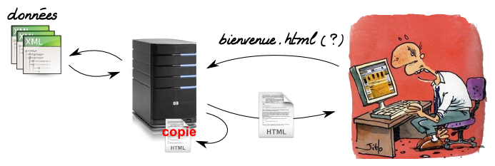

Il y a différent type de cache. Mettre des données en cache signifie que une fois qu'on a eu accès à des données, on les sauvegarde à un endroit où on pourra rapidement à y avoir accès. Il y a différent type de cache.
Dans le cas normal, le navigateur demande au serveur une page .html. Le serveur reçoit la demande, l'analyse et
va chercher dans les fichiers .xml l'information nécessaire à la création de la page. Une fois la page créée, le
serveur l'envoie au navigateur qui va l'afficher. Si la navigateur redemande exactement la même page, le serveur va à nouveau
analyser la demande et chercher dans les fichiers .xml l'information nécessaire à la création de la page puis
il l'affichera. Si les fichiers de données n'ont pas changé entre temps, exactement la même page sera affichée.
Pourquoi répéter plusieurs fois les mêmes opérations pour envoyer la même chose au navigateur ? L'idée du cache html côté serveur
est la suivante : la première fois, le navigateur demande une page .html. Le serveur reçoit la demande, l'analyse et
va chercher dans les fichiers .xml l'information nécessaire à la création de la page. Une fois la page créée, le
serveur la sauvegarde telle qu'elle est dans un dossier nommé cache et envoie la page au navigateur qui va l'afficher. La prochaine fois
qu'on lui demandera cette page, le serveur regardera si elle n'a pas déjà été enregistrée dans le dossier cache. Si elle s'y trouve
et si cette sauvegarde n'est pas trop ancienne, alors il renverra cette page au navigateur (sinon il ira extraire les informations des
fichiers de données).

Quand le serveur envoie une page (en fait un fichier .html) au navigateur, le serveur peut aussi dire au navigateur :
"Tu peux sauvegarder cette page localement sur l'ordinateur parce qu'elle ne va pas changer jusqu'à demain". Ainsi la prochaine fois
que l'utilisateur veut accéder à cette page (avant le lendemain), le navigateur ne va même pas demander quelque chose au serveur, il va simplement afficher
la page qu'il a sauvegardé localement. L'avantage est que le serveur est laissé tranquille et que l'affichage de la page est beaucoup plus
rapide vu qu'il n'y a rien a télécharger. L'inconvénient est que si la page vient de changer (sur le serveur), il faudra soit attendre
le lendemain pour se rendre compte du changement soit supprimer le cache de navigateur (là où sont sauvegardés toutes les pages .html) localement.
Une possibilité supplémentaire est de donner à chaque page ou fichier un code unique. Si, côté serveur, la page est modifiée (ce qui veut dire que les fichiers de données ont été modifiés), le code associé à la page sera aussi modifié. Quand le navigateur demande au serveur une page parce que sa copie locale est périmée, il donne au serveur le code de la page. Le serveur compare avec le code de la page côté serveur et si c'est le même code (la page n'a pas changé), il répond au serveur : "c'est bon, la page n'a pas changée, pas besoin de la télécharger".